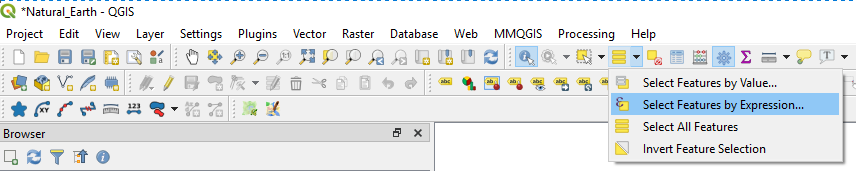
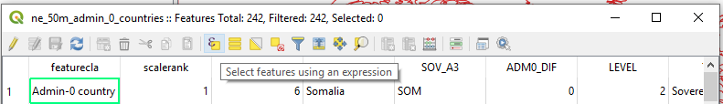
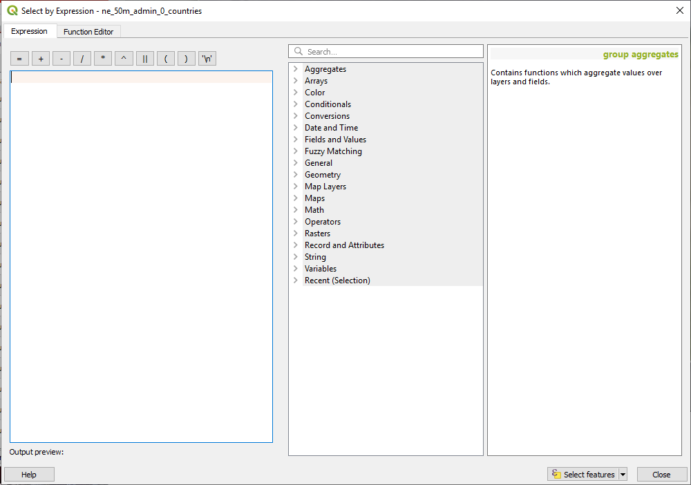
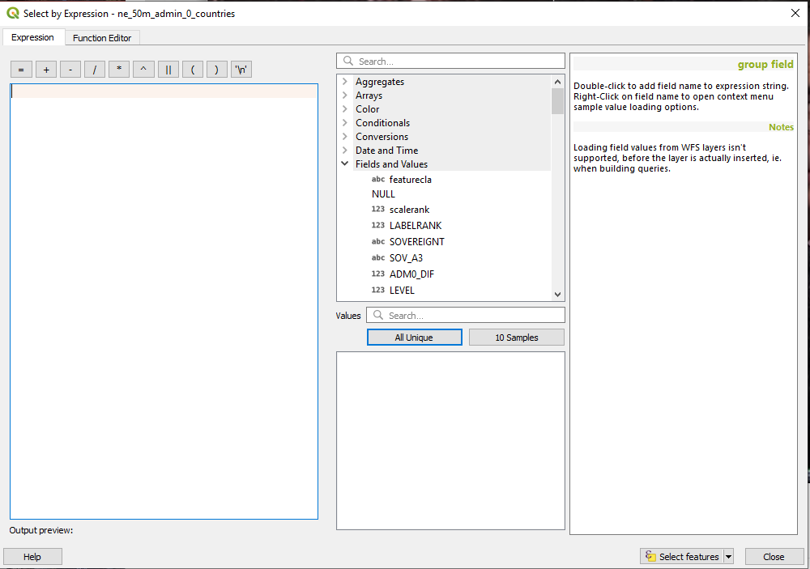
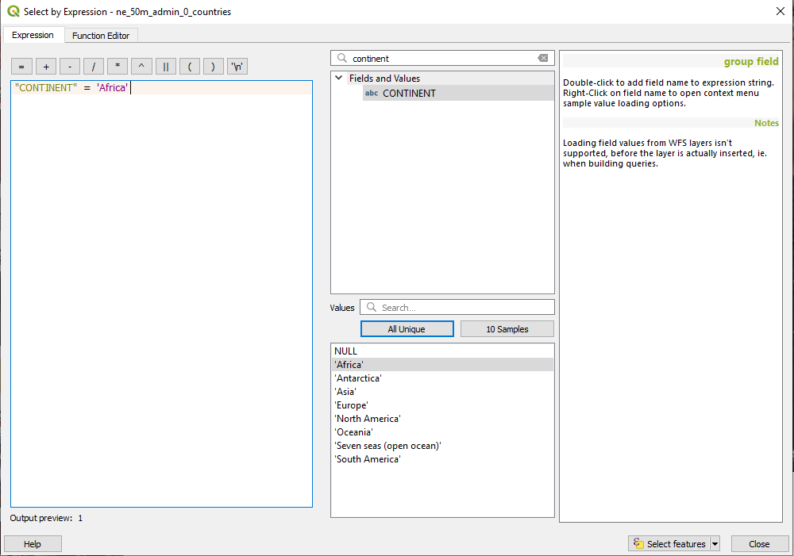
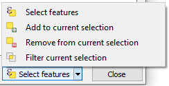
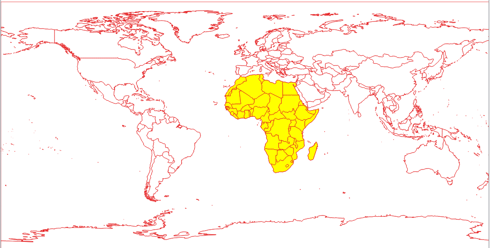

Select By Expression
Back To Basic ConceptsBack To Homepage
For this tutorial we'll use Natural Earth's Admin 0 Countries dataset.
It displays the political boundaries of 242 countries in the world.
You can start the selection either by clicking the select by expression  icon from the toolbar,
or if it's not there look for the other selection methods and click the small down arrow next to the and the click it.
icon from the toolbar,
or if it's not there look for the other selection methods and click the small down arrow next to the and the click it.

The other way is by accessing it is through the attribute table, which you can open by clicking it's icon  (F6)
(F6)
and then clicking the select by expression icon.

This window should open up for you:

What we are going to do is select all the countries in africa, the data has a CONTINENT field,
but we want to make sure we are going by the exact way both the field name and the value Africa are written.
To do this we can either select Fields and Values from the list in the middle of the window and scroll down to find the CONTINENT field,
or we can use the search bar by typing the field name.


You can double click the CONTINENT field to make sure it's in the expression on the left part of the window then clicking on the = sign button,
once the field is marked we can get either a sample of how the values in it are wirtten by clicking on All Unique or 10 Samples buttons.
Clicking the value you want or just an example to make sure your syntax is correct should be enough to complete our expression.
the last step is to decide wether you want to create a new selection (default), add or remove from the current selection or filter it.
You can do this by clicking the small arrow next to the Select Features button.

Our new selection should look like this

And thats it, Simple and easy to use, and now you know how to do that in Open Source.